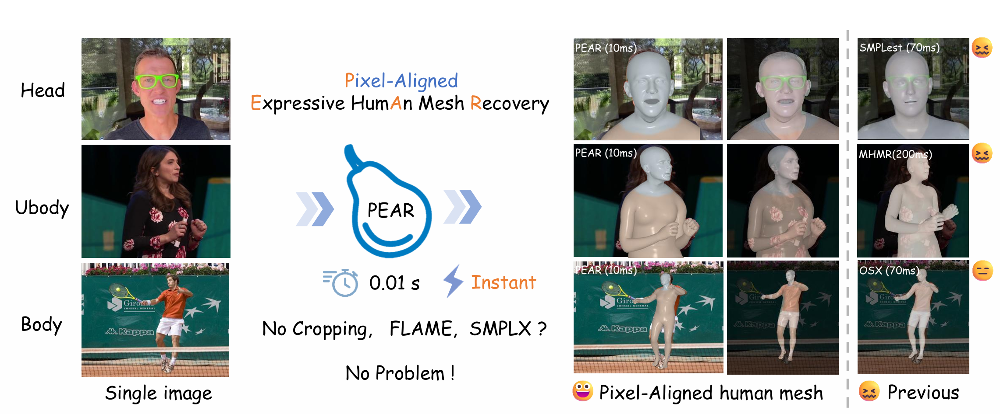
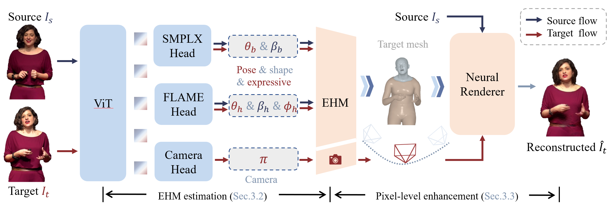
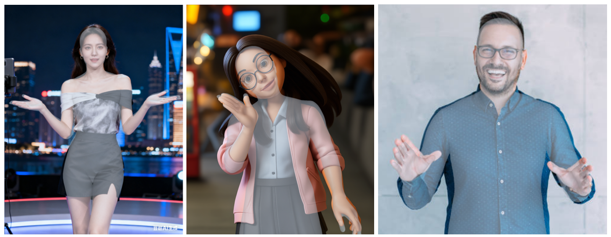
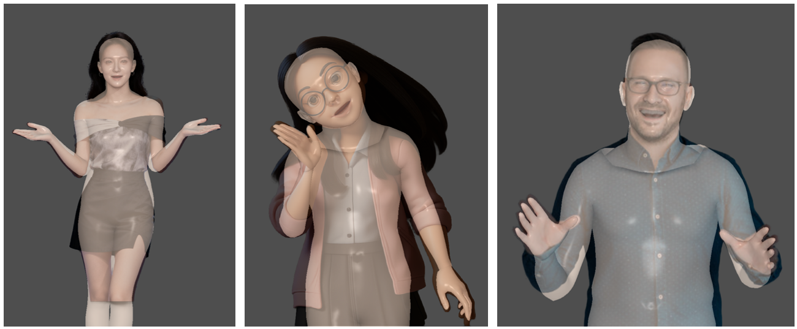
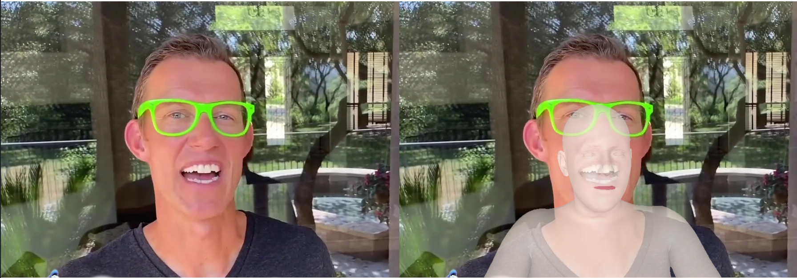
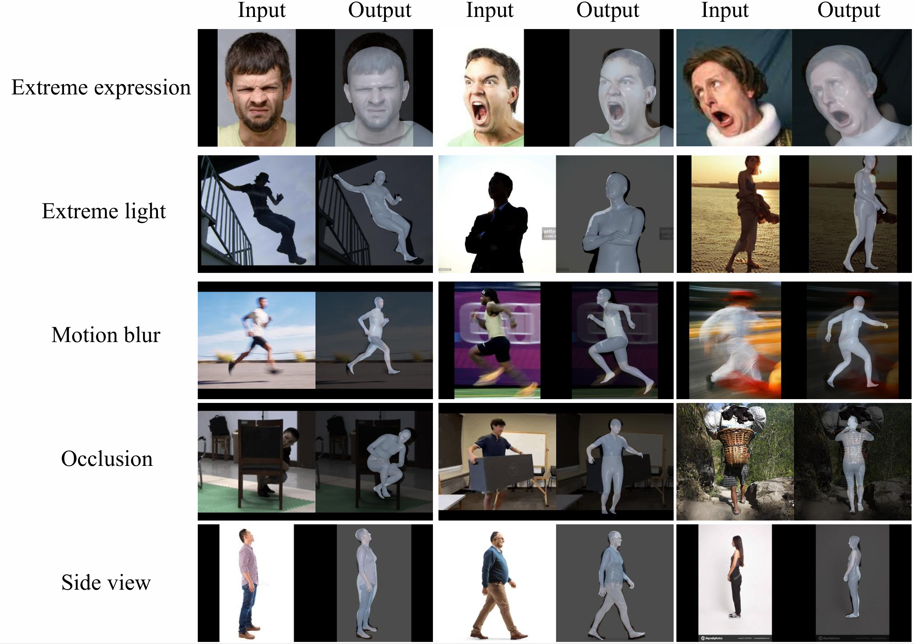

Reconstructing detailed 3D human meshes from a single in-the-wild image remains a fundamental challenge in computer vision. Existing methods often suffer from slow inference, produce only coarse body poses, and exhibit misalignments or unnatural artifacts in fine-grained regions such as the face and hands. These issues make current approaches difficult to apply to downstream tasks. To address these challenges, we propose PEAR—a unified framework for human mesh recovery and rendering. PEAR explicitly tackles three major limitations of existing methods: slow inference, inaccurate localization of fine-grained human pose details, and insufficient photometric supervision during self-reconstruction. Specifically, we train a clean, unified ViT-based model capable of recovering expressive 3D human geometry (EHM-s) from a single image without cropping any specific body parts. This preprocessing-free design enables real-time inference at over 100 FPS. In addition, we integrate the model with a neural renderer to jointly optimize geometry and appearance, significantly improving the reconstruction accuracy of fine-grained human geometry and producing higher-quality rendering results. Finally, we propose a modular data annotation strategy that enriches the training data and enhances the robustness of the model. Extensive experiments on multiple benchmark datasets demonstrate that our approach achieves substantial improvements in both geometric reconstruction accuracy and rendering quality.
We propose PEAR, a unified framework for real-time expressive 3D human mesh recovery. It is the first method capable of simultaneously predicting EHM-s parameters at 100 FPS.
Overview Video
PEAR's fine-grained body pose estimation for the upper body is more accurate than SAM3D's, resulting in an estimated human mesh that is more pixel-aligned. Most importantly, PEAR boasts an inference speed 100x faster than SAM3D, which supports real-time processing/inference.


SAM3D-Body
Ours
Our approach attains highly detailed facial alignment, enabling the capture of more nuanced expressions.
OSX
SMPLest

Multi-HMR (failed)
Ours
Our method achieves more accurate alignment with actual motion in both the face and hands.
OSX
SMPLest
Multi-HMR
Ours
Our method achieves finer pixel-level alignment across the entire human motion, rather than exhibiting the large offsets seen in other approaches.
OSX
SMPLest
Multi-HMR
Ours
Benefiting from PEAR’s fast inference speed (100 FPS), the system functions as a real-time animation interface, estimating SMPL-X and FLAME parameters from video streams and driving animations at 50 FPS.
Realtime Animation.
Drive a wider variety of identities
We showcase several extreme cases, such as motion blur, occlusions, strong illumination, as well as loose clothing and long hair.
